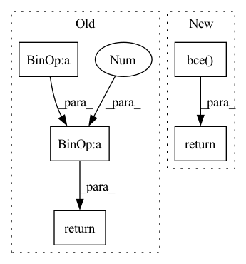

Pattern ID :30849

Before Change
def __init__(self):
pass
def execute(self, output, target):
x = 1 / (1 + jt.exp(-output))
return -(target*jt.log(jt.maximum(x,1e-20))+(1-target)*jt.log(jt.maximum(1-x,1e-20))).mean()
class L1Loss(Module):
def __init__(self):
After Change
self.bce = BCELoss()
def execute(self, output, target):
output = self.sigmoid(output)
output = self.bce(output, target)
return output
class SGD(object):
Usage:
In pattern: SUPERPATTERN
Frequency: 3
Non-data size: 5
Instances
Fragment ID: 90807192
Project Name: jittor/jittor
Commit Name: 357952d98ce8844dc8104ce103498c64c3f58b39
Time: 2020-05-07
Author: 576825820@qq.com
File Name: python/jittor/nn.py
M Class Name: BCEWithLogitsLoss
N Class Name: BCEWithLogitsLoss
M Method Name: execute(3)
N Method Name: execute(3)
M Parent Class: Module
N Parent Class: Module
M File Name: python/jittor/nn.py
N File Name: python/jittor/nn.py
M Start Line: 625
M End Line: 626
N Start Line: 153
N End Line: 155
'>
Before Change
trans_loss_t, domain_acc_t = self._single_domain_forward(g_t, f_t, domain=0)
self.grl.step()
self.domain_discriminator_accuracy = 0.5 * (domain_acc_s + domain_acc_t)
return 0.5 * (trans_loss_s + trans_loss_t)
def _single_domain_forward(self, logits, features, domain=1):
Perform forward on a single domain.
After Change
batch_size = f.size(0)
weight = weight / torch.sum(weight) * batch_size
self.domain_discriminator_accuracy = binary_accuracy(d, d_label)
return self.bce(d, d_label, weight.view_as(d))
class RandomizedMultiLinearMap(nn.Module):
Random multi linear map
'>
Fragment ID: 90807180
Project Name: thuml/transfer-learning-library
Commit Name: 8477111b23336e7dd2d349a4b35b969240ff5871
Time: 2020-04-12
Author: 13126830206@163.com
File Name: dalib/adaptation/cdan.py
M Class Name: ConditionalDomainAdversarialLoss
N Class Name: ConditionalDomainAdversarialLoss
M Method Name: forward(5)
N Method Name: forward(5)
M Parent Class: nn.Module
N Parent Class: nn.Module
M File Name: dalib/adaptation/cdan.py
N File Name: dalib/adaptation/cdan.py
M Start Line: 86
M End Line: 90
N Start Line: 87
N End Line: 100
'>
Before Change
trans_loss_t, domain_acc_t = self._single_domain_forward(g_t, f_t, domain=0)
self.grl.step()
self.domain_discriminator_accuracy = 0.5 * (domain_acc_s + domain_acc_t)
return 0.5 * (trans_loss_s + trans_loss_t)
def _single_domain_forward(self, logits, features, domain=1):
Perform forward on a single domain.
After Change
batch_size = f.size(0)
weight = weight / torch.sum(weight) * batch_size
self.domain_discriminator_accuracy = binary_accuracy(d, d_label)
return self.bce(d, d_label, weight.view_as(d))
class RandomizedMultiLinearMap(nn.Module):
Random multi linear map
'>
Fragment ID: 90807189
Project Name: thuml/transfer-learning-library
Commit Name: 6dfc8e293ca2cbc4d116dc8ed0a6ef176dff0d06
Time: 2020-04-12
Author: 13126830206@163.com
File Name: dalib/adaptation/cdan.py
M Class Name: ConditionalDomainAdversarialLoss
N Class Name: ConditionalDomainAdversarialLoss
M Method Name: forward(5)
N Method Name: forward(5)
M Parent Class: nn.Module
N Parent Class: nn.Module
M File Name: dalib/adaptation/cdan.py
N File Name: dalib/adaptation/cdan.py
M Start Line: 86
M End Line: 90
N Start Line: 87
N End Line: 100